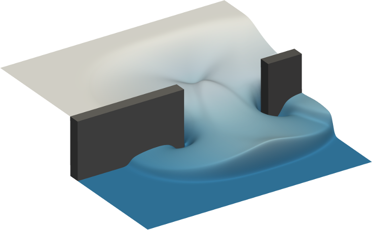
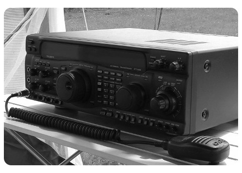

Computational fluid dynamics

- Fluidity: A computational fluid dynamics code with adaptive unstructured mesh capabilities.
- Firedrake-Fluids: A computational fluid dynamics code which uses the Firedrake automated solution framework.
- SeiGen: Solves the elastic wave equation using a high-order discontinuous Galerkin finite element method.

- PyQSO: A contact logging tool for amateur radio operators.

- PyRDM: A Python-based library for research data management (RDM).

- Game of Life: An implementation of Conway's Game of Life, for demonstration purposes in a Python programming workshop.
- Imperial SCR Menu: An Android application for checking the daily menu at Imperial's SCR restaurant.